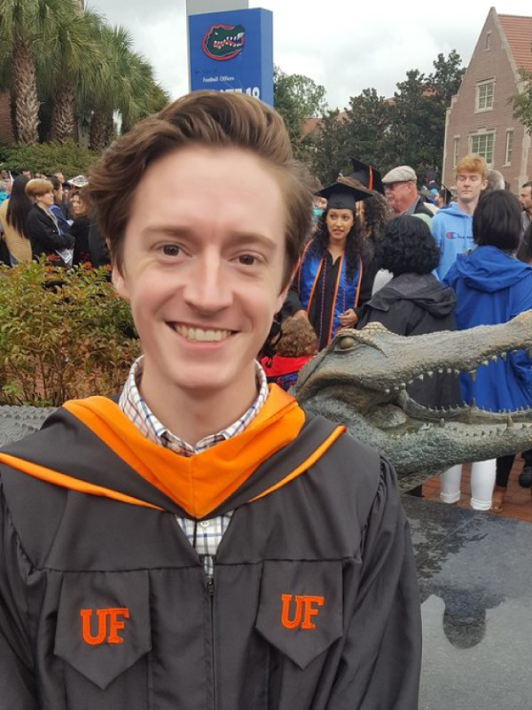

University of Florida, Gainesville, FL
PhD Electrical and Computer Engineering, expected 2020
M.A. Electrical and Computer Engineering, 2018
Herbert Wertheim College of Engineering
Gustavus Adolphus College, St. Peter, MN
B.A. Mathematics and Computer Science, 2015
Honors math, graduated cum laude
Passed Fundamentals of Engineering (FE) in Electrical and Computer Engineering
Amateur radio Technician Class license holder [KN4VBN]
Graduate Research Fellow, University of Florida [Gainesville, FL]
Led a team of engineers to build VLF receivers in a timely fashion meeting grant deadlines and checkpoints.
Implemented amplitude and phase calibration software for very low frequency magnetic field antennas
Made first observations of Q-burst waveforms in data acquired from the University of Florida’s VLF receiver at Palmer Station, Antarctica and seen at multiple sites around the world
Intern, Faurecia (Emissions Control Technologies) [Shanghai, China]
Created VBA macros to consolidate large finance excel files into manageable and understandable formats for executives
Corresponded with colleagues across Asia to gather company status reports, inventory updates, and financial reviews
Created monthly business plans and slideshows for finance division to present to management
Reported weekly to customer business unit manager and director of finance
Data Analyst Intern, NASA Goddard Space Flight Center [Greenbelt, MD]
Analyzed Coronal Mass Ejections using data gathered by the MK3 white light coronagraph atop MLSO
Wrote automation scripts using IDL and Bash to process images for analysis
Worked both independently and in collaboration with colleagues in the Heliophysics division, met deadlines, and contributed in multi-weekly meetings
Tutor, Gustavus Adolphus College Mathematics Department [St. Peter, MN]
Worked with students one on one and in group settings to assist in understanding of mathematics.
Used white boards to illustrate points and facilitate in demonstrating how to approach problem.
Grader, Gustavus Adolphus College Mathematics Department [St. Peter, MN]
Graded papers for calculus and statistics courses.
Met deadlines, created grading rubric, and provided feedback to students.
Eagle Scout, Troop 14 [Brookings, SD]
Led a project to construct a wheel-chair accessible raised flower garden at local retirement community
Created blueprints, budgeted required equipment, projected and kept to task timeline
Oversaw and managed between 5 and 12 scouts during construction
Attained 29 merit badges over course of troop membership
Hardware coding experience in VHDL and Verilog. Experience with software simulation of hardware.
Object oriented (Java, Python), assembly language, and scientific programming (Matlab, IDL) programming.
Experience using Eclipse, Atmel Studios, ModelSim, Quartus programming and simulation packages.
HTML, PHP, and CSS website development. (This site was made from scratch)
Experience with Windows, Linux, and Mac operating systems
UF ECE Graduate Student Organization, officer
Florida Institute for National Security (FINS), student fellow
Sigma Xi Research Society, student member
American Geophysical Union, student member
Gustavus Honor Board, former member
Gustavus Academic Technology Committee, former member
Gustavus Adolphus College President’s Scholarship [top scholarship award]
Rotary Club, student exchange ambassador
Boys Scouts of America, Eagle Scout
Tennis, photography, riding/fixing bikes, automotive repair, reading, puzzles